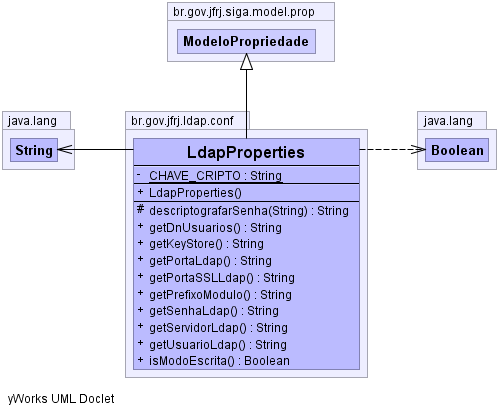

br.gov.jfrj.ldap.conf
Class LdapProperties
java.lang.Object
 br.gov.jfrj.siga.model.prop.ModeloPropriedade
br.gov.jfrj.ldap.conf.LdapProperties
br.gov.jfrj.siga.model.prop.ModeloPropriedade
br.gov.jfrj.ldap.conf.LdapProperties
- Direct Known Subclasses:
- SincProperties
public class LdapProperties
- extends ModeloPropriedade
-
-

| Methods inherited from class java.lang.Object |
clone, equals, finalize, getClass, hashCode, notify, notifyAll, toString, wait, wait, wait |
CHAVE_CRIPTO
private static final java.lang.String CHAVE_CRIPTO
- See Also:
- Constant Field Values
LdapProperties
public LdapProperties()
getPrefixoModulo
public java.lang.String getPrefixoModulo()
- Description copied from class:
ModeloPropriedade
- Retorna o prefixo do módulo (programa), fazendo uma separação de
namespaces para cada projeto. Esse prefixo é adicionado à propriedade que
o usuário deseja buscar. Por exemplo, se for buscada uma propriedade
"teste" no módulo siga.cd (projeto siga-cd), equivale à solicitar uma
propriedade "siga.cd.teste"
Veja alguns exemplos:
| projeto |
prefixo do módulo |
| siga-cp |
siga.cp |
| siga-ex |
siga.ex |
| siga-ldap |
siga.ldap |
| siga-base |
siga.base |
| siga-cd-base |
siga.cd.base |
- Specified by:
getPrefixoModulo in class ModeloPropriedade
- Returns:
getDnUsuarios
public java.lang.String getDnUsuarios()
getServidorLdap
public java.lang.String getServidorLdap()
getPortaLdap
public java.lang.String getPortaLdap()
getPortaSSLLdap
public java.lang.String getPortaSSLLdap()
getUsuarioLdap
public java.lang.String getUsuarioLdap()
getSenhaLdap
public java.lang.String getSenhaLdap()
descriptografarSenha
protected java.lang.String descriptografarSenha(java.lang.String senhaCriptografada)
getKeyStore
public java.lang.String getKeyStore()
isModoEscrita
public java.lang.Boolean isModoEscrita()